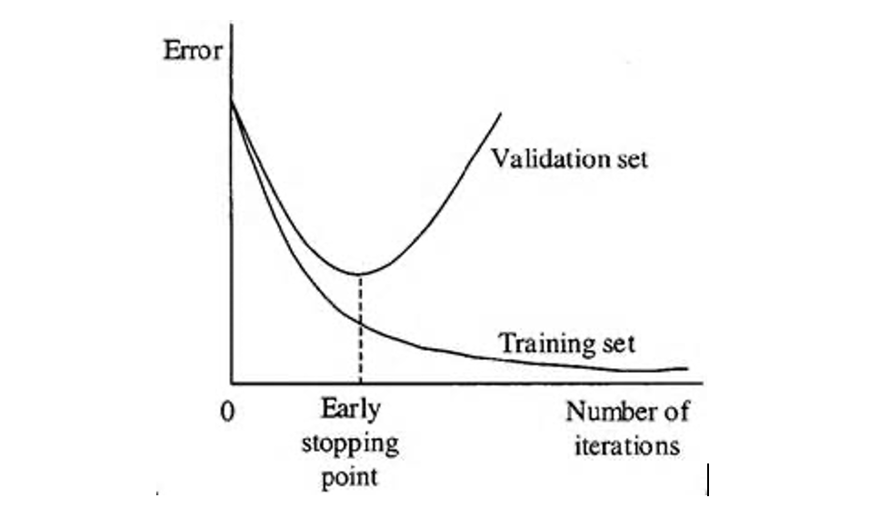

Look for stopping the training of a neural network early before it has overfit the training dataset can reduce overfitting and improve the generalization of deep neural networks
Context: A major challenge in training neural networks is how long to train them.
Problem: Too little training will mean that the model will underfit the train and the test sets. Too much training will mean that the model will overfit the training dataset and have poor performance on the test set.
Solution: Early stopping is an optimization technique used to reduce overfitting without compromising on model accuracy. The main idea behind early stopping is to stop training before a model starts to overfit.
Example: “Convolutional Neural Networks for Sentence Classification” used early stopping with 10% of the training dataset used as the validation hold outset. 